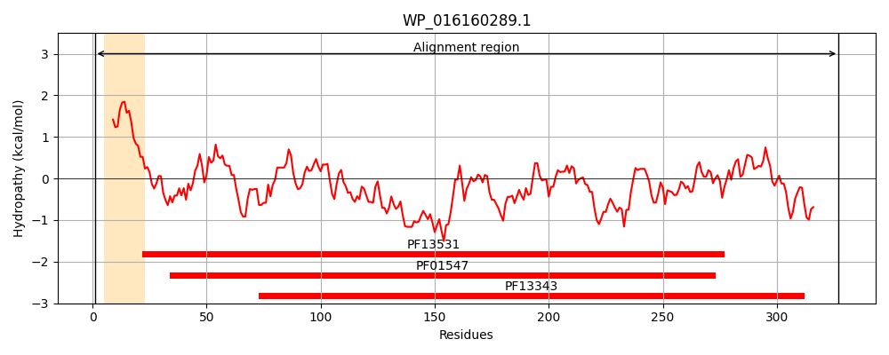
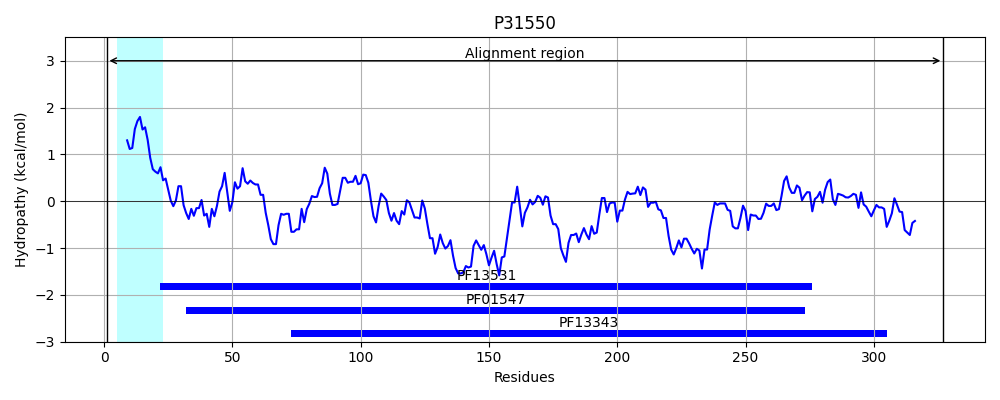
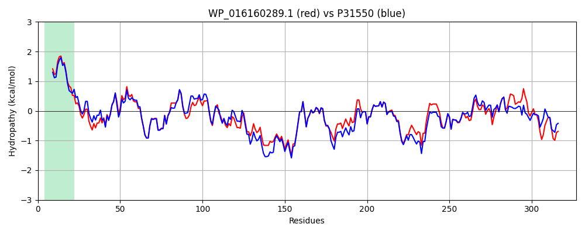

Hit Accession: P31550
Hit TCID: 3.A.1.19.1
Hit Description: gnl|BL_ORD_ID|9779 gnl|TC-DB|P31550|3.A.1.19.1 Thiamine-binding periplasmic protein precursor - Escherichia coli.
Mach Len: 327
e:0.000000
Query TMS Count : 1
Hit TMS Count: 1
TMS-Overlap Score: 0.950000
Predicted Substrates:CHEBI:9533;thiamine(1+) monophosphate, CHEBI:9532;thiamine(1+) diphosphate, CHEBI:9530;thiamine(1+)
BLAST Alignment:
Score: 1476 , Bit scores: 573 bits, E-value: 0.0e+00, Alignment length: 327, Percentage identity: 84
Query: 1 MLKKLLPLLALVAMPALAKPVLTVYTYDSFSADWGPGPAVKKAFEADCGCELKFVALEDGVSLLNRLRMEGKNSKADIVLGLDNNLLEAAAQSKLFAKSHVPASAVSVPGGWDNDTFVPYDYGYFAFVYDKNKLANPPKSLKELVESPQKWRVIYEDPRTSTPGLGLLLWMQKVYGDKAPEAWQKLAAKTVTVTKGWSEAYGLFLKGESDLVLSYTTSPAYHIIEEKKDNYAAASFAEGHYLQVEVAARTAASKQPELAEKFLKFMVSPGFQNAIPTGNWMYPVTQVALPAGFDTLVKPQTTLAFTPQQVASERQTWISAWQRAVSR 327
MLKK LPLL L P AKPVLTVYTYDSF+ADWGPGP VKKAFEADC CELK VALEDGVSLLNRLRMEGKNSKAD+VLGLDNNLL+AA+++ LFAKS V A AV+VPGGW+NDTFVP+DYGYFAFVYDKNKL NPP+SLKELVES Q WRVIY+DPRTSTPGLGLLLWMQKVYGD AP+AWQKLA KTVTVTKGWSEAYGLFLKGESDLVLSYTTSPAYHI+EEKKDNYAAA+F+EGHYLQVEVAARTAASKQPELA+KFL+FMVSP FQNAIPTGNWMYPV V LPAGF+ L KP TTL FTP +VA++RQ WIS WQRAVSR
Sbjct: 1 MLKKCLPLLLLCTAPVFAKPVLTVYTYDSFAADWGPGPVVKKAFEADCNCELKLVALEDGVSLLNRLRMEGKNSKADVVLGLDNNLLDAASKTGLFAKSGVAADAVNVPGGWNNDTFVPFDYGYFAFVYDKNKLKNPPQSLKELVESDQNWRVIYQDPRTSTPGLGLLLWMQKVYGDDAPQAWQKLAKKTVTVTKGWSEAYGLFLKGESDLVLSYTTSPAYHILEEKKDNYAAANFSEGHYLQVEVAARTAASKQPELAQKFLQFMVSPAFQNAIPTGNWMYPVANVTLPAGFEKLTKPATTLEFTPAEVAAQRQAWISEWQRAVSR 327 | Protein Hydropathy Plots: |
|---|
|  |  |
Pairwise Alignment-Hydropathy Plot:
|
|---|
|  |